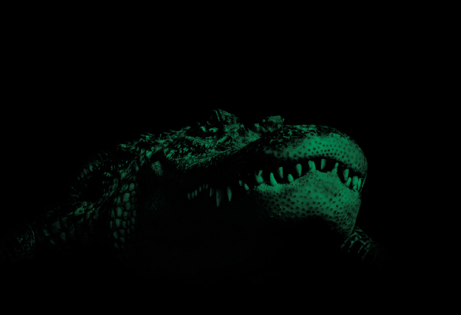
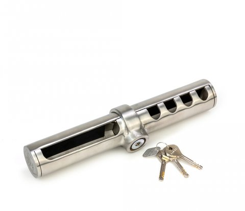
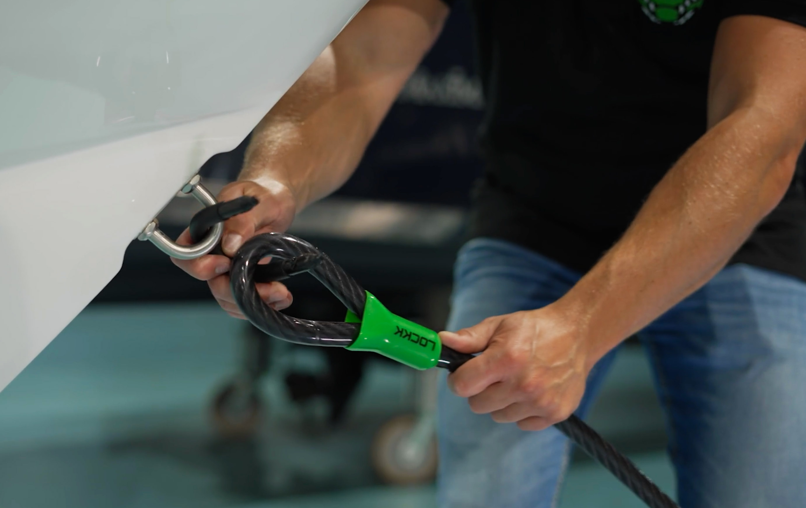
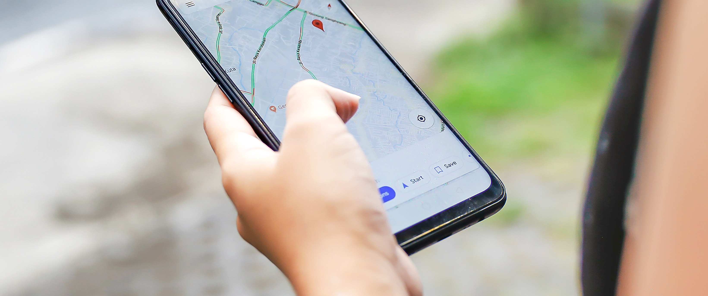

ART & SCM gecertificeerd
Professionele bootsloten voor boten, buitenboordmotoren en accessoires. Erkend door alle grote Nederlandse verzekeraars.
Van buitenboordmotorsloten tot kettingsloten — Lockk heeft een oplossing voor elke beveiligingsbehoefte op het water.

Maximale beveiliging voor uw buitenboordmotor. RVS 316 behuizing, boutmontage.

Betrouwbare beveiliging voor motoren met knevelmontage.

Muurbevestiging voor het vastzetten van uw boot aan de wal of steiger.

Zware stalen ketting van 2,5 meter inclusief ART-4 hangslot.

Flexibel 5-meter kabelslot van 20mm dik, inclusief beugelslot.
Inclusief hangsloten, loopkettingen en meer accessoires.
Naar alle productenErkend door Nederlandse verzekeringsmaatschappijen
Lockk ontstond vanuit een duidelijke behoefte in de watersport: een degelijk, gecertificeerd beveiligingssysteem dat ook echt werkt. Onze producten zijn ontwikkeld in samenwerking met verzekeringsmaatschappijen en voldoen aan de hoogste eisen.
Erkend door alle grote Nederlandse verzekeraars
Bestand tegen zout water en corrosie
In minuten gemonteerd, met bijgeleverd gereedschap
Verkrijgbaar bij dealers in NL & DE

Vergelijk onze drie meest verkochte producten op een rij.
| Kenmerk | OBL2 – Boutmontage | OBL1 – Knevelmontage | Kettingslot ART-4 |
|---|---|---|---|
| Certificering | SCM MP03 | SCM MP03 | ART-4 |
| Toepassing | Boutmontage motor | Knevelmontage motor | Boot / accessoires |
| Materiaal | RVS 316 | Gehard staal | Gehard staal |
| Boren nodig | ✓ Ja | ✗ Nee | ✗ Nee |
| Verzekeringserkend | ✓ Ja | ✓ Ja | ✓ Ja |
| Aanbevolen voor | Grote motoren | Kleine/middelgrote motoren | Boot & motor samen |
| Bekijk OBL2 | Bekijk OBL1 | Bekijk kettingslot |
Alle Lockk producten zijn onafhankelijk getest en gecertificeerd. Zo weet u zeker dat uw verzekeraar de beveiliging erkent.
Het ART keurmerk (1–4 sterren) wordt toegekend door de onafhankelijke Stichting ART. Lockk kettingsloten en walankers behalen het maximale ART-4 certificaat.
Meer over keurmerken ›De SCM MP03 certificering is speciaal voor buitenboordmotorsloten. Het garandeert erkenning door uw verzekeraar bij correct gebruik.
Meer over keurmerken ›
Voer uw postcode in om de dichtstbijzijnde Lockk dealer te vinden.
Bekijk alle dealers